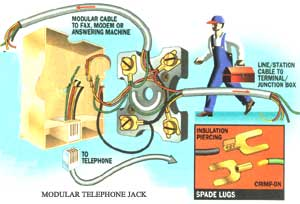

If you are even remotely handy with a screw driver and pliers, you can do everything telephonic inside your own home.
With the almost decade-old break up of American Telephone Telegraph's velvet-fisted monopoly over the nation's telecommunications network, you and I gained more control over (and responsibility for) our home phone systems than we may realize.
Before the so-called "AT&T Divestiture" we had to lease phone equipment. We weren't permitted to replace or modify phones, or so much as touch the phone wiring in our own homes, on penalty of loss of service or a fine thanks to tariffs (laws that protect the prerogatives of utilities whose services and rates are regulated by the government). We had a choice of less than a dozen phone models and colors, couldn't mute their infernal bell-ringers, and had to pay extra for anything but an ugly black desk phone. Extension phones cost extra too-and by measuring the electrical draw of your ringer current, Ma Bell could tell if you'd hooked up an extension or a ringer in the barn "on your own hook," so to speak. Tariffs permitted Ma to force you to take out any unauthorized equipment. But in return, her friendly linemen made house calls day or night, maintaining telephones and wiring at no extra charge.
Then suddenly came divestiture, and we had to own our own telephones-including a one-time chance to buy modernized versions of our installed Western Electric phones. In addition we had to have our home wiring systems "modularized" so that phones could be plugged in and disconnected easily. Then we had to "vote" on a long-distance carrier-remember that?
Now, of course, you can buy telephones in every color, and shaped like a Coca-Cola bottle or Mickey Mouse or a duck that quacks instead of rings-say nothing of cordless phones, answering machines, faxes, and modems that let computers talk to each other over the phone lines.
But in front of every silver lining there's a cloud. When she self-destructed, Ma Bell abandoned the industrial-strength wiring that she'd installed in your home (maybe almost 100 years ago). It's yours to keep (and to maintain), like it or not. You can either hire an electrician or phone company lineman to modify or repair your home phone system.
Or, if you are even remotely handy with a screwdriver and pliers, you can do everything telephonic inside your own home. If you like, you can run phone lines to every room in the house, out to the barn, the milk shed, and the outhouse. You can hook up a home office that will communicate around the globe via phone lines. And, you will soon be able to purchase Ma Bell cable television sent at microwave frequencies over the phone lines. The only restriction is that your outgoing signal must conform to your phone company's standards.
The New Phone Company
Divestiture took decades of litigation, but dogged federal trust-busters (spurred on by MCI boss Bill McGowan) convinced the courts that it was in the national interest for Ma Bell to share potential phone-linked profits from the coming "electronic information age." On January 8, 1984, weary of the battle, Ma agreed to be split into seven regional holding companies (the Baby Bells) plus the AT&T long-distance company and the world's leading high-tech research facility, AT&T/Bell Labs. Whole firms of high-priced Washington lawyers and office floors of Justice Department staffers quickly had to find other careers.
The Baby Bell's entry into information-age technology is restricted by the government, but is gradually expanding. America's 1442 telephone companies (TelCos) continue to enjoy local monopolies, but they aren't permitted to sell you a phone and their rates and services are regulated. Most are owned by a Baby Bell, but many are locally-owned and operated independents. Long distance service is largely free of regulation. Only AT&T still has to serve anyone who asks-including the less profitable rural markets, while MCI, Sprint, and others can skim the cream off the long-distance market.
It remains to be seen whether Bell Labs (which invented the transistor and much else that is making the "information age" a reality) will continue innovating under free competition. But with Ma's stodgy monopoly broken, we can buy Taiwan-made phones featuring tone/pulse dialing, hold, last-number-dialed memory, and a ringer off/on switch for less than ten bucks. And, spurred by competition, modern digital electronics permits tens of thousands of computer, fax, and video data as well as voice communications to stream over a single cable at the same time.
How It Works
When I was very young, my Great Aunt Elsa was operator of the 50-phone exchange in our little coastal Maine village. On the east wall of her back parlor loomed a big black switchboard with plug-ended cords and jacks (tubes to accept the plugs) for each customer and a toggle switch to change from "line" to "jack." A customer would crank the magneto at the side of the mahogany wall phone in the front hall, which would activate a bell in Elsa's parlor and trip a storage-battery-powered fire bell out in the barn. Aunt Elsa would come running, put on her headset, plug in and answer: "Operator... Mornin' Chester...Nope, Hiram ain't home; had to go to the dentist and get his plate fixed again...Yep, second time this week...But Elvira's just come in from hanging laundry and's talkin' with Sarah...I'll see if they're off the line yet...." She'd plug in to Hiram and Elvira's line and crank her own magneto till there was an answer. Then she'd patch Chester's line to Elvira's and stay on herself till the conversation got dull or someone else rang up.
If a customer wanted to call outside of our own little exchange, Elsa had to ring the operator in the next village or the AT&T long distance operator in town and then transfer the caller over. Telecommunications was mechanical and visible to the naked eye in those days. A pair of lines ran from each telephone to Elsa's switchboard, and callers were connected with honest cords with big, fat brass plugs that fit with a satisfying click into honest jacks.
Now, it's all automatic-accomplished invisibly inside black boxes by transistors and computer chips. When you dial, your phone connects with the electronic switchboard of your local TelCo. Untouched by human hands, your call is switched to phones in local exchanges or to AT&T, USA/Sprint, MCI, and other long-distance carriers who send it coast-to-coast and around the globe through a three-tier system of exchanges: 1) the local exchange identified by first three numbers of your phone number, 2) regional area codes, and 3) international country codes. Once free of the copper wires bringing it into your TelCo's main switch, the signal travels over an ever-more sophisticated network of automated switches, ground-level microwave dishes, sky-high FM satellites, and laser-transmitting fiber optic cables.
When you dial out, a 0-to-9 number-series of electrical impulses or touch-tone frequencies go to the TelCo's main switch and through as many other exchanges/ switches as needed to reach your party. Your call initiates a low voltage alternating-current (AC) signal (like household power, but much weaker) that triggers the annunciator on your party's telephone (no longer those shrill but honest Ma-bells, but a noisome little electronic buzzer that sounds to me like a horsefly newly stuck on a strip of flypaper). When your party picks up, the AC ring signal shuts off and your voices are transmitted by a two-way direct-current (DC) signal powered by a big battery at the TelCo. This all happens at the speed of light, and today you can direct-dial friends in Australia, connect in seconds, and talk almost as if they lived next door. Great-Aunt Elsa would be amazed-of course she'd also be out of work. The operators of my youth have been replaced by computers.
Become Your Own Lineman
But despite all of the high-tech, phone calls enter and leave your home through a pair of ordinary copper wires carrying an electrical current about as powerful as a transistor radio battery. No need to worry about the satellites and microwave dishes and optical cables owned and operated by Ma Bell's heirs. Your local TelCo is responsible for telephone poles and high wires, for the "dropline" (or underground conduit) running from the pole to your house, for a lightning arrestor/ground at your service entrance, plus-if you have an updated service entry-a "network interface" outside your house or apartment. (If you don't have a network interface like the one pictured, your responsibility begins where the wire exits the little gray, cubical lightning arrestor that is attached to a metal ground stake outside a private house, or where your line exits the telephone terminal/junction box in the cellar or utility room of an apartment house or condo.)
Inside the interface box the TelCo network terminates in a little plastic RJ-11/14 modular jack with four wire prongs inside-same as a telephone wall jack. An RJ-11/14 modular plug fits into the jack and connects to four color-coded terminal posts. Your home wiring connects to the posts and runs into the house-and from there on it's all your responsibility.
Operating companies do sell service policies; our own TelCo offers a 50 cents/month policy covering home lines and jacks. But at last report, they would repair only BellTel equipment installed to company specs; otherwise they charge $50/hour. They'll also diagnose problems in your telephone and lend you a phone for 60 days for $2/month (let's see, that's $24/year-a bit stiff when you can get a little one-piece phone free with a magazine subscription). Better to understand your own system and "terminal equipment"-as they call phones, answering machines, and other instruments at your end of the line-and do your own upkeep.
Home Wiring
Look inside the modular plugs on your phones and you will see the ends of four little wires colored black, green, red, and yellow. Unless they were miswired (often the case-even by pros) your (single-line) phone system runs through the red and green wires. One is a negative "hot" wire, and the other is a positive ground, but polarity is irrelevant when it comes to modern phone systems.
Inside the network interface you'll also find four colored wires leading out from the plug and jack to a color-coded wiring block with four screw-terminals. Attached to the terminals will be four color-coded copper wires encased inside a single gray, black, or white sheath leading into the house. This "station wire" runs through the house from phone jack to phone jack. Trace it to the first jack and with a screwdriver, remove the plastic cover. Inside, on the plastic wiring block screwed to the wall, you'll find four terminals Similarly-colored incoming and outgoing (to extension phones if any) station wire will be wound around the base of the terminals. On top of each will be little U-shaped spade lugs attached to color-coded wire leading into the RJ-11 phone jack molded into the plastic cover.
Professionally-installed wiring will have all four wires hooked up even though only one pair is used. Do not cut or detach the unused black and yellow wires. You may want them for a second phone or a fax or computer modem line someday. Or, if unhooked at the network interface, they offer an in-place, house-wide, hard-wired network you can use to run a private intercom system, a hardwired VCR "rabbit-style" video distribution system, a home-security system or a private TV with, say a camera in the baby's room and a monitor by your own bed. Most intriguing, the wiring will be in place to distribute soon-to-appear Ma Bell cable TV to every phone jack in the house.
In most older Ma Bell-installed systems, four-conductor station wire leads from the entry, through the basement, and up through a hole in the ground floor to a wiring block that was originally hardwired to the primary phone, but is probably now converted to a plug-in modular jack. More station wire installed to serve relocated or extension phones runs from the original jack along the floor molding, around the doors, and up the stairs to extension phones.
Fair warning; cellars and closets of old houses can contain some really antique phone wiring-with ancient tube/fabric-covered wire running through ceramic insulators and dusty black fuse boxes. If it works, don't try to "fix it" unless you want to circumvent it all and rewire from the network interface.
Install Your Own Extensions
To add an extension, buy as much as you need of the round, four-conductor station-wire (not the flat, flexible braided-wire modular cable used with Rj-11 modular plugs). Radio Shack sells station wire in 50-foot, 100-foot, and bulk lengths for about 15 cents/foot. Outdoor cable (to run a phone out to the barn) costs over $1/foot. Get a $2 stripping tool if you aren't an electronics buff like me with a drawer full of stripping/crimping pliers and connectors of all kinds. A package of insulation-piercing spade lugs will make attachment easier. Choose phone jacks that suit the installation. You can get modular jacks that snap onto old-style wiring blocks. Or, for an all-new installation, get jacks that come with wiring blocks.
Unhook your system from the phone net by unplugging your network interface jack. Remove the cover from any existing phone jack and loosen the four terminal bolts in the wiring block.
Unless you are a technology buff, avoid "feature phones." They're harder to program than a VCR.
Carefully scribe a cut two inches from one end of your station wire and peel off the outer sheath. Crimp insulation-piercing lugs on the end of each wire-or, strip ¼ inch of insulation from each of the four wires, push the bare wire into the socket of a conventional spade lug and squash it flat with pliers. Shove the lug, under the head of the appropriate-color terminal and tighten. If not using lug connectors, strip 3/8 inch off the end of each of the four colored wires and wrap each tight around the post of the terminal holding wires of the appropriate color and tighten. Make sure no bare wires or metal lug collars are touching and reinstall the jack cover. Be sure that bare wires at the other cut end of the station wire coil aren't touching, hook up the interface, and try the phone. If it works, you did it right. If you hear an odd buzzing, you've introduced a short; remove the jack cover and check again for crossed wires.
Now, run your station wire to your new extension location. Arrow and Swingline make staple guns that fit over station wire; fasten it with small phone-wire-shaped staples. But, rather than use a conventional staple gun (that will invariably mis-aim, piercing wires to create invisible shorts), fasten wire to moldings by hammering on white-painted insulated package staples.
At your new phone location, remove the cover of a new phone jack and fasten the wiring block to the wall or floor molding with a pair of screws. Cut the station wire to length and, as you did at the other end, strip ends of station wire and fasten on the wiring terminals. Attach lugs of same-colored wires leading to the jack. Try your new phone. If there's no sound at all, but the phone at the other end of the extension line works fine, the color-coding of your wiring is mixed up. Take the jack lugs off the newly-installed wiring block and try touching the red and green jack lugs to the black and yellow incoming lines. Keep trying till you find the operative combination-black/red, yellow/green, or whatever, and hook up what works. Mark the "hot" terminals; if you want to carry the system on from there, connect the red and green lines to them.
This in-line series system is okay for up to three phones. Add a fourth and you may not have enough AC ring-voltage-especially if you are at the end of a long line. Pick phones with ringer-off switches and keep all but one or two off and you can install as many phones as you like.
Buying and Installing Terminal Equipment
Unless you are a technology buff or have a continual business use for call-forwarding and other gee-whiz phone features, avoid buying overly complex "feature phones"; they're harder to program than a VCR. Phones with number-memories are okay (though the memory is first to go if you have a surge or lightning Strike). We have three lines at our place, but I've given up on multiple-line phones. It's simpler, cheaper, and more foolproof to have one simple, sturdy ATT or Radio Shack basic wall phone for each line.
We all detest the "throw-away economy." But, most home phone equipment is simply not made to be repaired. First, it is made from solid-state components robot-assembled with surface-mount technology-resistors and capacitors and computer chips permanently welded to a circuit board. If they are going to die, these devices should do so on initial "burn in" within the retail or mail-order return or manufacturer's warranty period.
Second, technology is changing so fast that most equipment will be obsolete before it ages enough to malfunction-at which time a replacement will probably be cheaper than repair costs. Here's a case in point: when my 10-year-old, dual-tape answering machine died, I discovered I could get a single-tape replacement for less than the minimum charge for opening up and testing the old model, to say nothing of trying to find the long-out-of-production repair parts-an almost impossible feat.
All modern phone equipment contains sensitive solid-state electronics that can be fried by a surge or voltage transient from lightning striking the phone lines. Protect answering machines, expensive phones, faxes, and computer modems by attaching them through a phone-line spike protector that plugs into any three-prong, grounded electrical socket (or to a properly-attached three-prong adapter for an old-fashioned two-prong outlet).
Buy a $10 El Cheapo spare to keep on hand just in case. Or, as I did, hard-wire in an old-fashioned, non-modular, bell-ringing, rotary-dialing, non-electronic phone. They're available still at some surplus outlets and were built to last forever-back when Ma Bell had to replace them if they failed-so they'll withstand fire, flood and two-year-olds. If anything on an old phone fails, it will be the handset cord, and that is easily replaced.
Long Distance
Recall when we were supposedly given a vote on our long-distance (LD) carrier? For most of us country mice, our only ballot choice was AT&T. Only Ma Bell's long-line heir has connections to every hamlet in the nation-and is required to maintain them. In the interest of free trade, the new kids on the phone net, MCI and friends, were permitted to cherry-pick their customers and have concentrated on high-volume business callers. Their TV ads for a fiber-optic signal so clear you can hear a pin drop carry about a pin's weight outside the major metro areas.
You'll notice that your phone bill has two parts-local TelCo charges and separate LD charges. You can change LD carriers any time you like (AT&T does charge a bit more than the competition). Just call another carrier and ask; if they offer service in your area, they'll be delighted to do the work of switching over for you. But I'll never switch; after a lifetime of battling Ma Bell's snitty Lily Tomlin-esque/Ernestine operators, it's a pleasure to hear today's LD-Ops intone "Thank you for calling AT&T. How may we help you?" Divestiture can't be all bad-even if a leaner, meaner Bell Labs makes the Japanese think up some new electronics ideas on their own.
Extra Services, Extra Charges
Call Waiting and Three-Way: Adored by teenagers (and many parents), kids can spend the evening on conference calls rather than having their brains scrambled by TV's Fox network.
Call-Out Blockers: The relatively new half-dollar-a-call or so-many-dollars-per-minute 900-number services range from call-in political opinion polls to porn-by-phone. Some TelCos offer a screening service out of the home office or you can buy a gadget that hooks between modular jacks inserted in the line between the network interface and the phones you want screened. It will prevent your kids from hearing things they shouldn't, or running up bills on the proliferating "chat nets" where kids from all over the country hook up (at long-distance rates) to discuss rock groups. Dungeons & Dragons, and other youth concerns. On the better models you can block all 900 calls or permit access to selected exchanges. Price is as low as $20- the cost of a few minutes' teen chatter.
Unlisted numbers: Not having your name, address, and phone number included in the directory-and available to anyone calling directory assistance-costs you about $2/month. Why privacy costs almost $25 a year is beyond me. To avoid the charge, have your number listed under an alias. As long as the TelCo has the correct billing address, they won't object.
Touch-tone service: This costs about $1/month per line. A waste unless you need it. For about $10 you can get a touchtone sound generator to place an order with a home shopping channel.
Call Screening: This is now available in many major metro areas and is coming everywhere. Originated at the Telco's main switch, a caller's listed name and number prints out on a special mini-screen-equipped phone so you can ID them before answering. You can avoid phone solicitors, crank callers, or your mother-in-law. But, the local TelCos are still regulated, and Call Screening is currently subject to privacy and freedom-of-speech litigation. The FCC may be forced to allow anyone to refuse to let their number be identified-defeating the purpose of Call Screening altogether. Wait for the lawsuits to be settled before investing in a Caller ID phone. Letting callers identify themselves on the answering machine before you pick up will serve the same purpose.
Accessories
Cordless Phones: A marvel of modern technology, the cordless is really a pair of miniature two-way radio broadcasting stations. One station is the console that plugs into the phone line in the house and the other is a rechargeable-battery-powered portable handset that can be carried around over its 100 yards or so range. The original models of the eighties were more novelties than phone-quality communications instruments. Audio quality was tinny and interference was common. The number of FCC-allocated radio frequencies allocated was few, and because each phone needs one frequency to talk and another to hear (and originally, the home electrical lines were used as the base-station's antenna) callers in apartments or nearby homes often interfered with each other's conversations. Worse, any conversation was accessible to anyone with a portable unit that received on the same frequencies. More than one compromising phone call was recorded surreptitiously. And, unscrupulous phone "pirates" would cruise neighborhoods, dialing till they located a cordless phone turned on but not in use. Then they would call Hong Kong and Addis Abbaba on the luckless owner's phone tab.
You can still find old-style but perfectly serviceable cordless models in liquidation outlets at super-bargain prices. They are fine as portable barn or chore phones in isolated rural locales. I use one when cutting wood or feeding the livestock, awaiting a call from MOTHER'S editors or family members.
You'll find the new generation of cordless phones to be greatly improved. With automatic frequency-search, 10 or so available over-the-air frequencies are scanned to reduce interference while improved filters give you sound quality almost as clear as a wired instrument. Transmissions are digitally encoded (sent out over the air as a series of super-rapid off-or-on pulses) and can't be understood even if they are received by a random eavesdropper. With auto-disconnect when you hang up, your phone line can't be pirated any more either. Expect to spend over $100 for a quality cordless. Most of them also serve as speaker phones and as two-way intercoms allowing you to speak back and forth between the remote handset and the console plugged into the phone line in the house.
Answering Machines: Nearly everybody hates talking to answering machines-especially when your calls are answered by a horrible recording that imitates Jerry Lewis or Humphrey Bogart-but we're learning to live with them. Mechanical cassette tape drives were the major problem source of older models. New single-tape designs are more reliable and all-digital (calls that are recorded on solid-state computer chips) will be better still when prices come down.
Fax machines: You can send anything that can be put on a sheet of paper across the phone lines by scanning the image with a narrow light beam and translating the reflected image into a rapid series of beeps. These beeps cause a thermal printer at the other end of the line to burn lines of light/dark spots into heat-sensitive paper. Priced at $3 and up, they are becoming an essential business-communications tool and are slowly finding homes uses. Fax your pizza order to town and they'll have "no anchovies" in writing.
Video Phones: Around since the fifties, these phones have never sold (do you want a 7 A.M. caller to see you just out of bed?). But the Japanese are peddling them again; both callers must have the same phone model and only a series of still shots can be transmitted by fax-type video technology, but prices aren't unreasonable. Buy one for your folks retired to Florida and use yours to send live photos as they talk with their grandchildren.
The Phone Future
In October of 1991 the FCC authorized the Baby Bells to offer computerized information services. And in August of 1992, they were authorized to begin sending TV signals. Later that year they were authorized to send data by microwave, and in November they moved into the TV market. Soon, to the chagrin of cable TV companies (weakly-regulated monopolies in their service areas), you'll be able to receive high-definition TV over the phone lines. There is a fee, but watch cable company rates dive and service improve.
Ma Bell and her many cousins abroad established a high-quality network that reaches into just about every building on the planet. As high-speed digital transmission systems mature, we will be offered interference- and error-free information of every sort (audio, video, and text) over the phone. What new service Ma Bell's offspring come up with next is anybody's guess.
|
SCOTT MACNIEL |
 |
|